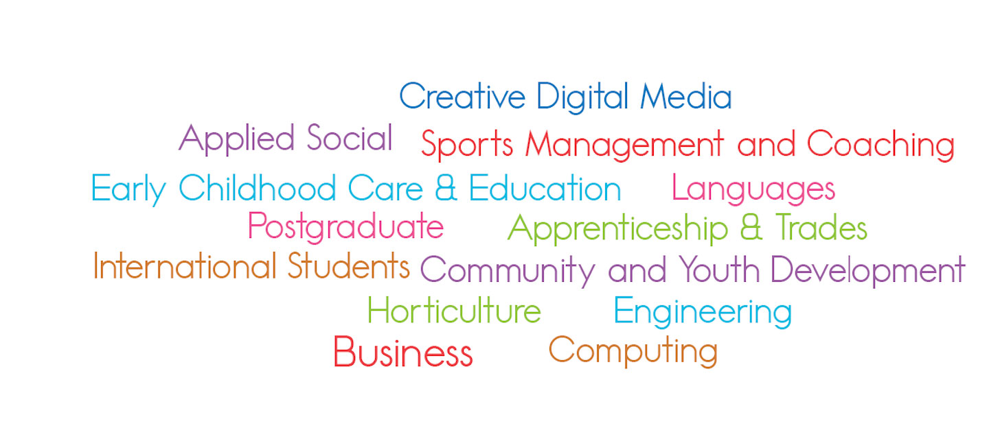

Students of ITB
Chosing a college to study at is important, but chosing a course that you want to studty is the most vital part!
We talked to some studnets in all differnt courses and asked them why they chose the course they did!
Here is a visual representation of all the differnt courses that are available here in ITB!

Applied Social Studies
-
'I want to help those people who may not be able to help themselves'.
-
'To gain a qualification so I can do something I feel competent in'.
-
'I want to help people achieve their best ability. I believe that everyone has the right to enjoy their life'.
-
'I want to work with people from different backgrounds from my own'.
-
'It offers a variety of jobs'.
-
'Many reasons led me to this course including personal background'.
Early Childhood Education
-
'I want to become a primary school teacher'.
-
'To further my career'.
-
'I love children'.
-
'I love working with children and I want to teach them to the best of their abilities'
Community and Youth Development
-
'I Love working with young people'.
-
'I want to become a youth worker'.
-
'Empower young people and social change'.
-
'I want to work in that sector'.
Creative Digital Media
'I have an interest in photography and creating things with stories'.
'I chose the course because it is creative and technical'.
'Strong interest in photography and art'.
'I picked this course as it is very diverse and has many job oppertunities after studing and its the area I am interested in.'
'It has so many unique routes. You aren't just caught down one road in life'.
Bachelor of Buisness
-
'I was interested to make it my career'.
- 'To pursue a career in the field'.
'interested in business'.
- 'I studied business in secondary school and it was something I was always interested in so I wanted to further my knowledge.'
Horticulture
- 'I have a great interest in horticulture, I studied Agricultural Science in secondary school and I knew it was the area I wanted to further my education in'.
-
'I love the outdoors'.
-
'To gain knowledge and experience in order to get the best job that I can in an area that I enjoy working in.'
- 'Ex Warrenstown staff and good facilities on the ITB campus.'